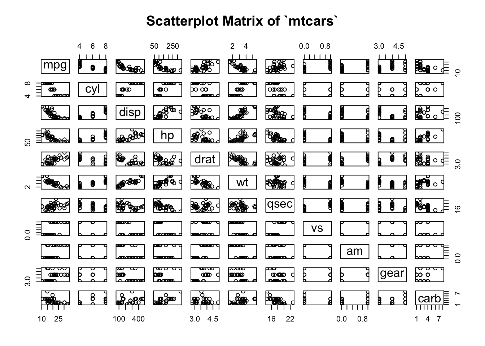
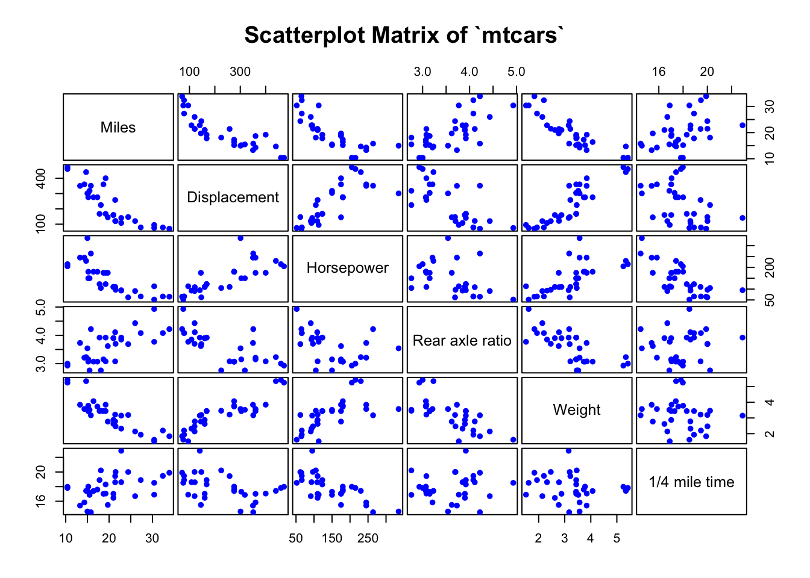
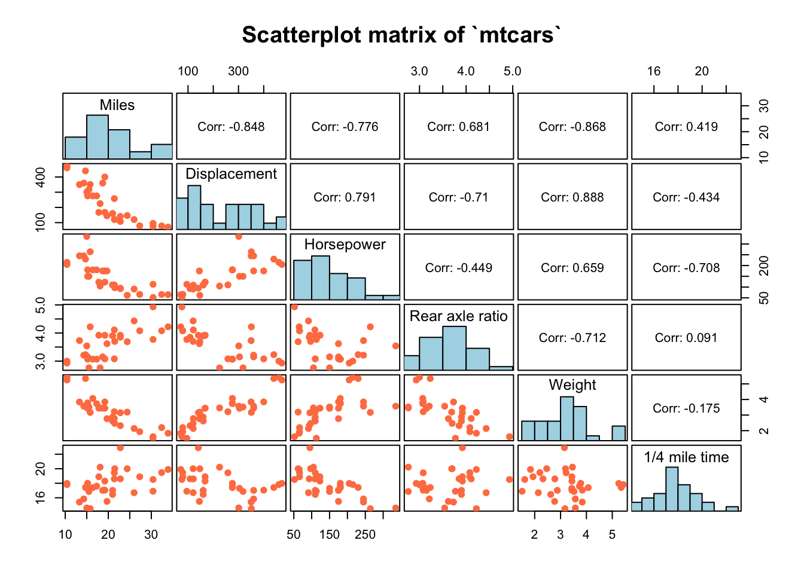

Chapter 3 Customized Plot Matrix: pairs and ggpairs
Yibai Liu
3.1 Overview: Things we can do with pairs() and ggpairs()
When our data contains multivariate variables, it is important to evaluate associations between these variables before modeling. We can create scatterplot matrices, correlation matrix, as well as mosaic pairs plots to get an idea about if and how these variables are correlated with each other. In this tutorial, I would plot using a base r function pairs() and a function ggpairs() from the GGally package, which both functions provide methods to generate customized plot matrices.
Plots for different purposes: - Scatterplot matrix: correlations between continuous variables - Mosaic pairs plot: correlations between categorical variables
3.2 Scatterplot matrix for continuous variables
3.2.1 Plot with pairs()
3.2.1.1 Basic scatterplot matrix of the `mtcars dataset (all numeric variables)

We notice that there are some numeric variables actually discrete or representing categories, so we can trim all discrete and categorical variables, and only plot continuous variables in the matrix.
3.2.1.2 Continuous variables only

3.2.1.3 Change color, shape, size of points, as well as labels and gaps of the plot
pairs(mtcars[, c(1,3:7)],
col = "blue", # Change color
pch = 19, # Change shape of points
cex = 0.8, # Change size of points
labels = c("Miles","Displacement","Horsepower",
"Rear axle ratio","Weight","1/4 mile time"), # Change labels
gap = 0.3, # Change gaps in between
main = "Scatterplot Matrix of `mtcars`")
3.2.1.4 Add a smoother to each scatterplot
pairs(mtcars[, c(1,3:7)],
lower.panel = panel.smooth, # Add a smoother for the lower panel
col = "blue",
pch = 19,
cex = 0.8,
labels = c("Miles","Displacement","Horsepower",
"Rear axle ratio","Weight","1/4 mile time"),
gap = 0.3,
main = "Scatterplot Matrix of `mtcars`")
3.2.1.5 Separate groups using different colors
Tip: You can also highlight a certain level of a categorical variable by simply turn other levels to grey.
mtcars$vs <- as.factor(mtcars$vs)
pairs(mtcars[, c(1,3:7)],
col = c("blue","red")[mtcars$vs], # Group by variable `vs`
pch = 19,
cex = 0.8,
labels = c("Miles","Displacement","Horsepower",
"Rear axle ratio","Weight","1/4 mile time"),
gap = 0.3,
main = "Scatterplot Matrix of `mtcars` Grouped by Engine")
By separating data points by vs or the engine type, we can see that two groups form distinct clusters for many of the variables.
3.2.1.6 Choose panel display
If the plot seems dominated by too many points, you can turn off one of the panels.
pairs(mtcars[, c(1,3:7)],
col = c("blue","red")[mtcars$vs],
pch = 19,
cex = 0.8,
labels = c("Miles","Displacement","Horsepower",
"Rear axle ratio","Weight","1/4 mile time"),
gap = 0.3,
upper.panel = NULL, # Turn off the upper panel above the diagonal
main = "Scatterplot Matrix of `mtcars`")
3.2.1.7 Customize your own plot matrix
The plot matrix is consisted of multiple panels, e.g. the upper panel, lower panel, diagonal panel, etc. You can customize each panel and make your own plot.
#Panel of correlations
panel.corr <- function(x, y){
usr <- par("usr"); on.exit(par(usr))
par(usr = c(0, 1, 0, 1))
r <- round(cor(x, y), digits=3)
txt <- paste0("Corr: ", r)
text(0.5, 0.5, txt, cex = 1)
}
#Panel of histograms
panel.hist <- function(x, ...){
usr <- par("usr"); on.exit(par(usr))
par(usr = c(usr[1:2], 0, 1.5) )
h <- hist(x, plot = FALSE)
breaks <- h$breaks
len <- length(breaks)
y <- h$counts/max(h$counts)
rect(breaks[-len], 0, breaks[-1], y, col = "lightblue")
}
#Panel of scatterplots
panel.scat <- function(x, y){
points(x,y, pch = 19, cex = 1, col = "coral")
}
#Plot
pairs(mtcars[, c(1,3:7)],
lower.panel = panel.scat,
upper.panel = panel.corr,
diag.panel = panel.hist,
labels = c("Miles","Displacement","Horsepower",
"Rear axle ratio","Weight","1/4 mile time"),
gap = 0.3,
main = "Scatterplot matrix of `mtcars`")
3.2.2 Plot with ggpairs() from GGally package
3.2.2.1 Basic ggpairs() plot
# You need both ggplot2 and GGally packages loaded to use ggpairs()
ggpairs(mtcars[, c(1,3:7)],
columnLabels = c("Miles","Displacement","Horsepower",
"Rear axle ratio","Weight","1/4 mile time"),
upper = list(continuous = wrap('cor', size = 4)),
title = "Scatterplot matrix of `mtcars`")
3.2.2.2 Separate groups using different colors
ggpairs(mtcars[, c(1,3:7)],
columnLabels = c("Miles","Displacement","Horsepower",
"Rear axle ratio","Weight","1/4 mile time"),
aes(color = mtcars$vs), # Separate data by levels of vs
upper = list(continuous = wrap('cor', size = 3)),
lower = list(combo = wrap("facethist", bins = 30)),
diag = list(continuous = wrap("densityDiag", alpha = 0.5)),
title = "Scatterplot matrix of `mtcars` Grouped by Engine")
3.3 Categorical variables
There are some categorical variables in the dataset mtcars. We can turn these variables and also discrete variables into factors
### Factorize discrete/categorical variables
mtcars$cyl <- as.factor(mtcars$cyl)
mtcars$am <- as.factor(mtcars$am)
mtcars$gear <- as.factor(mtcars$gear)Now we can create a mosaic pairs plot with pairs_diagonal_mosaic() in the vcd package


3.4 Outside sources
You can check out the following links to find more interesting ways to customize your plot matrix.
[R pairs & ggpairs Plot Functions] https://statisticsglobe.com/r-pairs-plot-example/#:~:text=The%20pairs%20R%20function%20returns,pairs%20command%20is%20shown%20above.
[ggpairs() r documentation] https://www.rdocumentation.org/packages/GGally/versions/1.5.0/topics/ggpairs
[Pairs plot for contingency tables] http://finzi.psych.upenn.edu/R/library/vcd/html/pairs.table.html